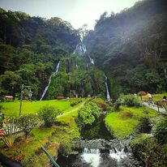

es el arte y la técnica de obtener imagenes duraderas debido a la acción de la luz.2 Es el proceso de proyectar imágenes, capturarlas y plasmarlas bien por medio del fijado en un medio sensible a la luz o por la conversión en señales electrónicas. Basándose en el principio de la cámara oscura, se proyecta una imagen captada por un pequeño agujero sobre una superficie, de tal forma que el tamaño de la imagen queda reducido. Para capturar y guardar esta imagen, las cámaras fotográficas utilizan película sensible para la fotografía química, mientras que en la fotografía digital se emplean sensores tipo CCD, CMOS, etc.; que graban luego las imágenes en memorias digitales. El término fotografía sirve para denominar tanto al conjunto del proceso de obtención de esas imágenes como a su resultado: las propias imágenes obtenidas o «fotografías».
Fotografia artistica
La fotografía artística surge a mediados del siglo XIX. El lenguaje artístico fotográfico parte básicamente de la herencia de la pintura. La fotografía artística tiene un carácter muy subjetivo y la manipulación de las imágenes se ha convertido en algo indispensable para la expresión artística. Podemos destacar en este tipo de fotografía a Annie Leibovitz, Helmut Newton o David LaChapelle, fotógrafos que sin duda siguen formando parte de la evolución de la fotografía artística.
Fotografia publicitaria
La fotografía publicitaria es aquella que nace con el fin de anunciar, dar a conocer y vender un producto, y es uno de los campos más creativos y exigentes dentro del mundo de la imagen. Nació con la única intención de mostrar lo que el anunciante quería vender y hacer saber a la gente de su existencia y ha ido transformándose en el elemento más importante de las campañas publicitarias. Poco queda de aquellos primeros anuncios en los que solo se enseñaba el producto y se exclamaba alguna de sus virtudes. Hoy en día, estos productos llevan añadidos valores que, o bien la publicidad quiere resaltar, o es ella misma la que se los otorga.
Fotografia paisajes

La fotografía de paisaje es quizás uno de los tipos más tradicionales, y no es ningún misterio el por qué ya que nuestro mundo tiene vistas fantásticas. La captura de paisajes a través de la fotografía es una habilidad poderosa, ya que a menudo permite una documentación honesta de la naturaleza. Sin embargo, puede notar que la de paisajes no siempre captura la naturaleza exclusivamente. Fotografiar paisajes también puede incluir paisajes urbanos, puentes y edificios históricos